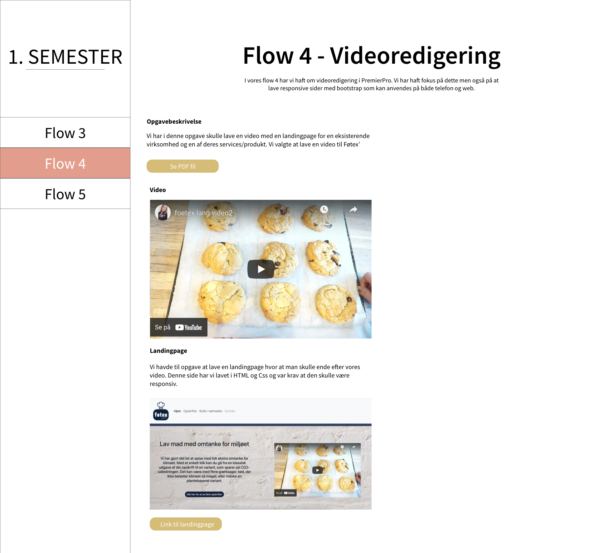

Flow 5 - Eksamensprojekt
I vores sidste flow for semesteret, flow 5, har vi haft til opgave at redesigne vores portefølje fra flow 2.
Opgave Flow 5.7 - Eksamensprojekt
Opgavebeskrivelse
I dette flow har vi vores eksamensprojekt. Her har jeg haft til opgave at redesigne min portefølje fra flow 2.
Jeg har skulle anvende ny viden som jeg har fået fra flow 3 og 4 og anvende dette til mit redesign.
Der har været fokus på responsivtdesign, brugertest, projektplanlægning og konceptudvikling.
Jeg har linket den fulde opgavebeskrivelse nedenunder.
Projektplanlægning
Da jeg skulle vælge hvordan jeg ville planlægge mit projekt, havde jeg svært ved at bestemme mig for hvad der passede bedst til mig.
Jeg lavede først en trello, men jeg følte jeg manglede noget hvor jeg kunne vælge dage og hvor man kunne se hvor langt man var med de forskellige opgaver.
Under gantt-charten kan man se en PDF med mit projektplanlægningsvalg.
Jeg valgte derfor at lave en gantt-chart og dette har fungeret rigtig godt for mig.
Første brugertest
Før jeg begyndte på mit redesign, havde jeg til opgave at lave en brugertest af min daværende portefølje.
Jeg udvalgte 5 testpersoner som hver især fik tre spørgsmål de skulle svare på omkring min portefølje.
Efter jeg havde samlet testresultaterne sammen fra brugertesten, gik jeg derefter i gang med mit redesign.
Ud fra min brugertest fik jeg følgende resultater:
- Forsiden, mindre billeder og mere viden omkring hvad siden er og kan
- Bedre alignment
- Enten fjerne eller udstrege de andre semestre, indtil de kan tilgås
- Sørge for at alle formater er det samme, cirkler, skriftstørrelse, tegnsætning
- Fjerne navigation i footeren og kun have den i toppen (evt. med en til toppen pil)
- Mere kontrast mellem farver, mere guld, mere ens skriftfarve
Konceptudvikling
Målgruppe
Før jeg gik i gang med min konceptudvikling, ville jeg først beslutte mig for hvilken målgruppe jeg havde for min side. Mit formål med min portefølje skulle være at vise hvem jeg er som person og hvad jeg har designet men også at fremtidige arbejdsgivere skal kunne finde min side og have lyst til at kontakte mig. Derfor er målgruppen i forhold til aldersgruppen voksne i aldersgruppen 30-60, da det typisk er i denne alder at man er chef for et firma og derfor skal ansætte folk til ens virksomhed.
Moodboards
Det første jeg gjorde i min konceptudvikling var at lave to moodboards, så jeg kunne få en fornemmelse af min side.
Jeg har været i tvivl om hvilken vej jeg ville gå med min sides farver og stemning, og har derfor forsøgt mig i to moodboards.
På denne måde kunne jeg se hvilken en af dem jeg bedst kunne lide og hvilket bedst passer til mig.
Mit første moodboard er baseret på tre nøgleord:
- Industrial interior
- Warm
- Modern
Mit andet moodboard er baseret på tre nøgleord:
- Light pink
- Gold
- Girly
Jeg har valgt at gå med det lyserøde moodboard, da jeg synes det er mere spændende og minder mere om mig og har den stemning jeg vil skabe.
Det er lidt mere ungdommeligt og mere iøjnefaldende end det andet moodboard, som er mere mørkt og mystisk.
Farver
Jeg valgte at gå med 5 farver til mit projekt:
- Lys lyserød #F1CDBE
- Mørkere lyserød #E39D8C
- Guld #D5BC77
- Sort #000000
- Hvid #FFFFFF
Typografi
Til min font har jeg bestemt mig for at gå med en font som minder om min tidligere font.
Jeg kan godt lide det 'lette' og simple udtryk som den skrifttype jeg har valgt giver.
Fonten hedder: Source Sant Pro Ultra Light
Jeg overvejede også at bruge skriften 'Parisienne', men fandt ud af at det blev for meget.
Logo
Jeg havde allerede lavet en logo sidste projekt, som var baseret på E og L i mit navn.
Jeg valgte at lave mit logo lidt om så det passede bedre til mit nye farveskema og det 'lette' look.
Logo før

Logo efter

Udover det havde jeg lavet et wordmark logo, som jeg tænkte jeg kunne bruge som overskrift eller til min navbar.
Designprincipper
Da jeg har skulle designe min portefølje har jeg haft fokus på designprincipper.
Jeg har gjort brug af følgende principper:
- Typografisk hieraki Mange steder på min side har jeg gjort brug af forskellige skrifttype til at definere overskrifter, underoverskrifter og brødtekst.
- Padding Padding har jeg anvendt til at give mere luft omkring min tekst, så det har et mere let look.
- Nærhed Jeg har brugt kasser hvor jeg har sat teksten som hører sammen tæt, så man kan se at det som står nært sammen hører sammen.
- Aligment På min side stå tingene i aligment, feks har jeg meget tekst som har center-alignment.
- Gentagelser I min flowside har jeg mange gentagelser, sådan at siderne har ens udtryk hele vejen igennem og man kan fornemme de hører sammen.
Styleguide
Ud fra alle mine designvalg har jeg lavet en styleguide over min side.
Her har jeg indsat font, farver, typografi, tekstur og logo.
Tryk på billede for at få det op på en ny side.

Skitser, wireframes & Mockup's
Skitser
Før jeg begyndte at tegne mine skitser, søgte jeg på nettet efter porteføljer sådan så at jeg kunne samle inspiration til mit redesign.
Efter det fandt jeg papir og blyant frem og begyndte at tegne hvordan jeg tænkte at min side skulle se ud.
Jeg vidste at fremfor en masse små sider ville jeg laver en forside som kørte ud i et.
Wireframes
Jeg har til hver af mine sider lavet wireframe, sådan så jeg vidste hvor tingene skulle stå på min side.
Til min 1. semester side havde jeg valgt en sidebar fremfor en header, så man nemmere kunne finde rundt i semesteret og kunne åbne den i mobiltilstand.
Desuden har jeg valgt venstemargen på disse sider da der er mere læsestof, fremfor centreret som jeg har på forsiden.
Mock-ups
I min mock-up bestemte jeg mig for hvor jeg ville have de forskellige farver på mine sider.
Jeg vidste at jeg ville have nogen knapper på min side hvor at man skulle kunne hente længere versioner af opgaver, så hele siden ikke blev for lang.

Sitemap & Flowcharts
Sitemap
Efter jeg havde kodet min side havde jeg lavet en sitemap over min side.
Ud fra min sitemap kan man se hvilke sider som kan tilgås fra min navigationsbar.
Flowchart
Jeg har også lavet en flowchart over at sende mig en mail.Videosekvens
Jeg havde til opgave at lave en videosekvens af mig selv eller en video der sagde noget om mig.
Her har jeg valgt at lave en 'fun-facts' video om mig, hvor man kan se hvem jeg er og lære lidt om mig.
Min video
Herunder er den fulde PDF med storyboard, manuskript og virkemidlerne til min video
Anden brugertest
Efter jeg var færdig med at kode min portefølje lavede jeg endnu en brugertest.
Jeg udvalgte nogen testpersoner som jeg gav følgende opgaver:
- Skriv mig en mail
- Se mit storyboard til min video fra flow 5
- Se min 1. semester forside
Feedback
Efter de skulle finde disse elementer på min portefølje, bad jeg dem komme med feedback i forhold til hvordan det var at finde frem til disse ting.Jeg bad dem også komme med andet feedback hvis de havde noget de synes der skulle laves om.
Jeg fik følgende resultater:
- Svært at finde hjem knap på semester/flow siderne
- Linked-in link virkede ikke
- Navigationsbaren er svær at læse fordi den er gennemsigtig
Rettelser
Efter mine resultater fra min brugertest har jeg rettet alle kommentarene.Læs mere om min brugertest ved at klikke på knappen nedenfor.
Forbedringer i fremtiden
Herunder har jeg lavet en liste med ting som jeg gerne vil rette i fremtiden eller ting jeg ville have lavet hvis jeg havde mere tid.
- Ikoner fremfor tekst hvor mine sociale medier står.
- Gennemsigtig til solid navbar når man ruller længere ned på siden.
- Dropdown på ’1. Semester’ på navbar, hvor man kan vælge de forskellige flows.
- Dropdown i sidebar under flows, så man nemmere kan navigere rundt i flowsne.
- Når man trykker på sidebar-luk knappen så skal sideindholdet fylde hele siden i webbrowser tilstand.